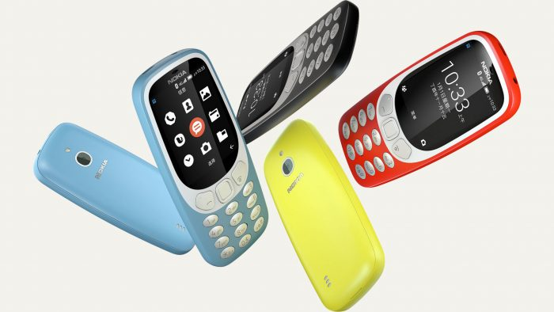
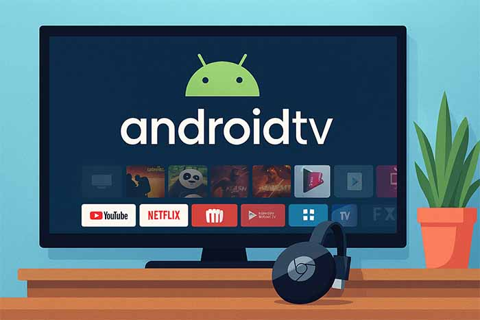

2008 – Primeiro Android
O HTC Dream foi o primeiro smartphone com Android, lançado com Gmail, Maps e YouTube integrados.
Tudo aquilo que você sempre quis saber sobre o mundo
Tech, em um único lugar.
Antes do HTC Dream, a Google tentou convencer a LG a fabricar o primeiro Android. A LG recusou, achando que o sistema não tinha futuro. Poucos anos depois, Android dominava o mercado global.
Em 2010, o Android ultrapassou o Symbian. como sistema mais usado no mundo. Na altura, Symbian era o rei dos telemóveis Nokia A transição foi rápida, e em menos de dois anos, o Android já era líder absoluto.

Antes do Wear OS, existiu o Android Wear, lançado em 2014. Apesar de parcerias com Motorola e LG, o sistema não conquistou o público. Só em 2021, com a fusão com o Tizen da Samsung, é que os relógios Android ganharam força.
Lançado em 2014, o Android TV prometia revolucionar as televisões. Mas só com a chegada do Chromecast e das Smart TVs da Sony e Xiaomi é que começou a ganhar tração. Hoje, é a base de muitos sistemas de entretenimento doméstico.

Durante anos, o Android sofreu com a fragmentação — dezenas de versões diferentes em uso ao mesmo tempo. Em 2017, mais de 30% dos utilizadores ainda usavam versões com mais de 3 anos. A Google tentou resolver com o Project Treble e Mainline, mas o problema persiste em parte até hoje.
Lançado com o Android 8.0 Oreo, o Project Treble separou o núcleo do sistema das modificações dos fabricantes, para facilitar atualizações. Apesar de melhorias, muitos dispositivos ainda demoram meses (ou anos!) a receber novas versões.
Apesar de o Android ser hoje um sistema omnipresente, a sua trajetória está repleta de detalhes surpreendentes que muitos desconhecem. Desde versões que nunca chegaram ao público, mascotes com histórias curiosas, até projetos ambiciosos que ficaram pelo caminho, o universo Android é um verdadeiro baú de segredos tecnológicos. Nesta secção, reunimos algumas das curiosidades mais intrigantes que ajudam a contar a história por detrás do robô verde — não só como sistema operativo, mas como fenómeno cultural.
O HTC Dream foi o primeiro smartphone com Android, lançado com Gmail, Maps e YouTube integrados.
Android ultrapassa Symbian e torna-se o sistema mais usado no mundo em apenas dois anos.
Prometia revolucionar as televisões, mas só ganhou força com o Chromecast e Smart TVs da Sony e Xiaomi.
Mais de 30% dos utilizadores ainda usavam versões com mais de 3 anos. Google lança Project Treble.